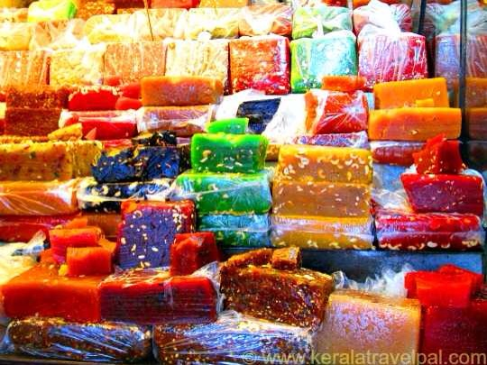
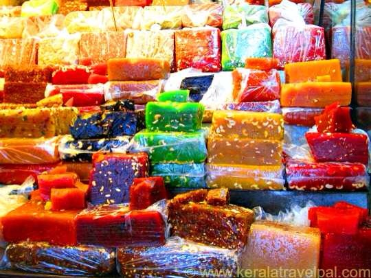

KOZHIKKOD
Also, called as Kozhikode by the locals, Calicut is a pristine haven replete with tranquil beaches, historical forts and plush green ambience giving a distinct touch of nature to your journey. It is mainly a preferred weekend getaways from Bangalore and Kerala and offers a peaceful retreat for those wanting to be away from the teeming crowds of cities. Having been a spice capital in the ancient times, Calicut is renowned for its spices and you can take your inner chef out to shop for spices, coffee, pepper and coconut. Also, this place got its name from ‘Calico’ which is printed soft cotton and you can buy it in the best markets of Kozhikode.
 


1. KOZHIKKOD BEACH
Sparkling in an old-world allure, Kozhikode Beach is an ideal location for relaxing and unwinding yourself away from the modernity of today’s world. This beach is a primary tourist attraction of Calicut and has been attracting visitors for the best sunrise and sunset to witness. During January, a significant Malabar Mahotsavam is organized on the beach which will let you catch a glimpse into the rich Indian culture and the traditions of Kozhikode, plus with a backdrop of mesmerizing Arabian Sea it doesn’t really matters which time of the year you visit this beach as with every season the charisma of Kozhikode Beach becomes more tempting than ever!
2. BAYPORE

Located in the heart of Calicut, Beypore is a popular ship building port which is known to be one of the busiest fishing harbours of Kerala. Considered to be one of the best places to visit in Calicut, the Beypore beach also happens to be an important commercial center for building the ships. While the city is also famed for its unique shipping vessel called “Uru”, do not miss out on going for a ride on the famous two-kilometre long Pulimoodu bridge.
3. KADALUNDI BIRD SANCTUARY
Kadalundi Bird Sanctuary is situated amidst numerous islands and hillocks and near to the Kadalundi River coming from the Arabian Sea. The beauty of this Bird Sanctuary is breathtaking plus is an amazing sanctuary for bird-watching as it is home to 100 local bird species and around 60 migratory bird species to let you ponder upon the chirping and sweet twittering of birds rhythmic to the charm of natural beauty of this place. It is definitely a must visit place to adore the spellbinding and spectacular appeal this city holds for its tourists.
4. TALI TEMPLE

Located nearby to the Mannanchira Square, Tali Temple is one of the oldest and well-known temples of Calicut. In historical times, this place used to be the host of a yearly contest of academic skills known as Revathi Pattathanam. This temple is devoted to Lord Shiva, housing the holy Shivaling of 2 ft, and the architecture of the temple follows a typical Kerala style. The temple management organizes five pious ceremonies every day and a weekly festival is also hosted during the Malayalam New Year.